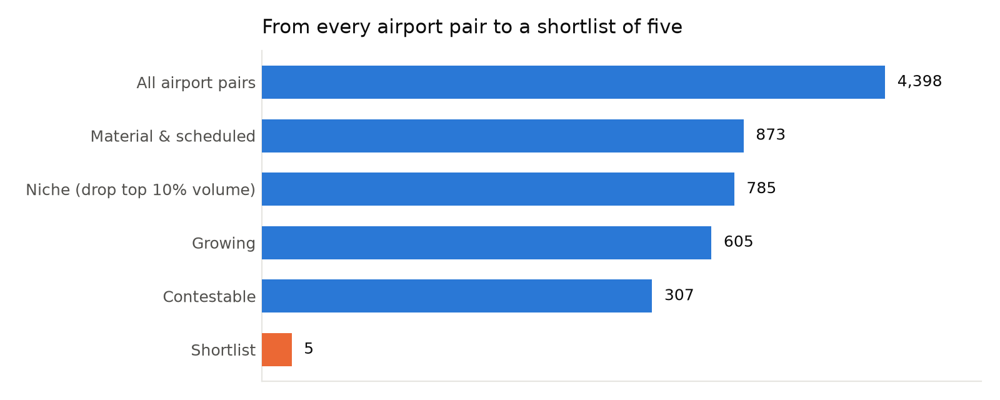
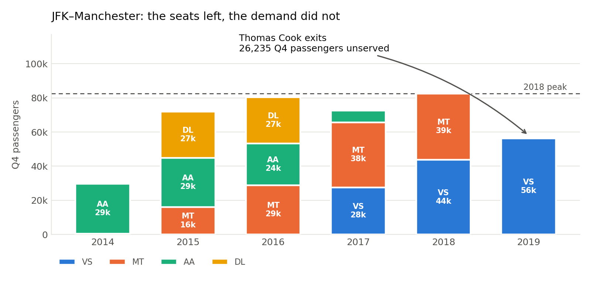
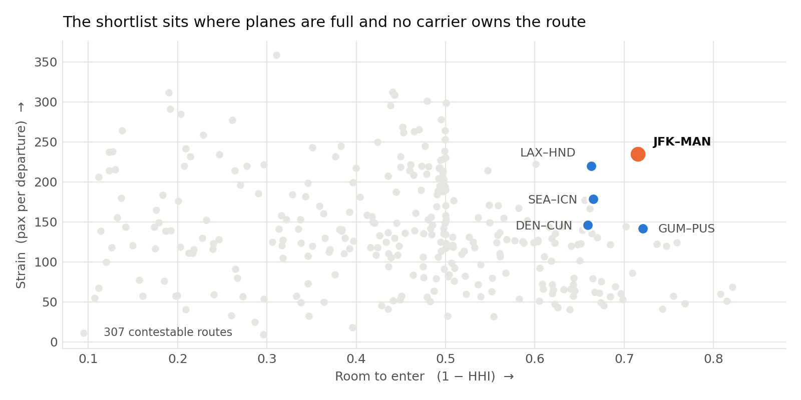

Meridian gets one rotation. That rules out maximising market size. The biggest markets are big because incumbents with slots, feed and scale already hold them. So we scored routes on capturability, not size:
Opportunity is demand that already exists, on planes that are already full, on a route nobody owns.
Each dial is a percentile rank inside the candidate pool, so they are unit-free and additive. Room uses 1 − HHI, not carrier count. Two carriers can be an open duopoly or a 97% fortress, and only concentration tells them apart.

TAI ranks LAX–HND first. We reject it: Tokyo Haneda's US slots are allocated government-to-government and held by Delta, United, American and ANA. "Room" measures concentration. It cannot see that the seats are legally unobtainable. Three majors splitting a route evenly reads as contestable and is in fact a closed shop.
Manchester is the UK's second gateway: the same national market as Heathrow, without the slot war Meridian cannot win. It is also the only finalist with a catalyst.

It carried 47% of the route in 2018. Virgin Atlantic backfilled only part of it. The planes still flew 320 passengers per departure, so the demand did not evaporate. It went unserved.
26,235 ÷ 344 passengers per departure = 76 flights over 92 days. The vacated demand is almost exactly one daily rotation, precisely the capacity Meridian has been funded for. We are not making a market or starting a price war; we are occupying a seat someone else left.
| Weighting | Top route | JFK–MAN |
|---|---|---|
| Equal (our prior) | LAX–HND | #2 |
| Capturability-led | JFK–MAN | #1 |
| Strain-led | JFK–MAN | #1 |
| Room-led | JFK–MAN | #1 |
| Growth-led | LAX–HND | #2 |
| Size-led | LAX–HND | #24 |
JFK–MAN wins outright whenever Strain or Room carries real weight. That is, whenever the score reflects Meridian's actual weaknesses. Weight size instead and it falls to 24th. We are not hiding that; it is the whole sensitivity.
Drag the four dials and watch the ranking re-order live:
dashboard/index.html

Post-2019 schedule data showing Manchester capacity restored to 2018 levels. The case rests on one specific, dated vacancy. Our data stops three months after it opened. If it has been filled, the thesis is dead.
Assumptions: Q4 ordering approximates annual ordering; passengers ÷ departures is a usable load proxy absent seat counts; vacated demand persists rather than permanently re-routing via LHR/DUB/AMS; and history guides the launch year.